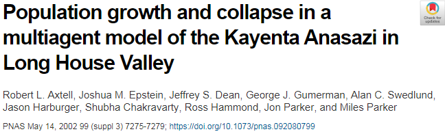

Angourakis and Graham - TIPC2
8-10 October 2018
Gaming Artificial Anasazi
Applying immersive game design and storytelling to an agent-based model in archaeologyAndreas Angourakis @AndrosSpica & Shawn Graham @electricarchaeo
available at
https://andros-spica.github.io/TIPC2-Angourakis-Graham-2018/
https://andros-spica.github.io/TIPC2-Angourakis-Graham-2018/index.html?print-pdf (printable version)
https://andros-spica.github.io/TIPC2-Angourakis-Graham-2018/index.html?print-pdf (printable version)

I
Gaming simulated pasts
Agent-based modelling (ABM) is a relatively extended practice in Archaeology


Big challenge for ABM:
Complicated designs + lack of documentation
=
'black box' effect
Articles are read, but no one engages with the models
people could play such ABM archaeological models?


Schelling's Seggregation model


Sugarscape series and Evolving planet
II
Artificial Anasazi
One of the first experiences, the Artificial Anasazi model was design for exploring the relation of climate change and cultural collapse
